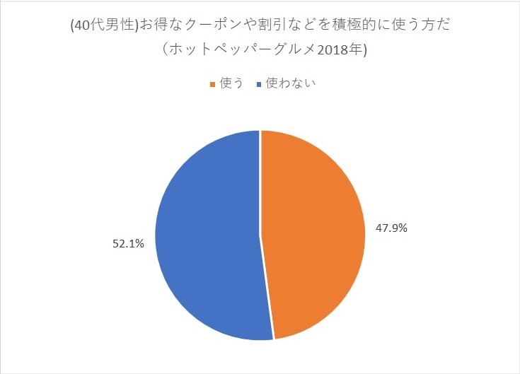

ペルソナ作成までの道のり
サイトの目的
衛生面の徹底と既存顧客の維持・新規顧客の獲得
新型コロナウィルス対策を行いながらも既存の顧客を維持し、
さらにコロナが今後落ち着くことを見越して新規の顧客獲得も視野に入れたサービスを取り入れる。
店舗とペルソナの住所について
店舗の設定については 激戦区ではあるが店舗数・占有率には隔たりがある為、 店舗の設定には表1(グラフ1)より双方の平均から近似値を設定し 最初にどちらにも合致した江東区を選択した。

ペルソナの年齢について
グラフ2より江東区の人口は40代が多い。特に40代前半の総数は約50,000人と最も多い。
さらに40～44歳の間では42歳が一番多い。この為、ペルソナの年齢は42歳とする。
また下記グラフから外食時は家族と行くことが多い。
この為、年齢と家族構成の設定は42歳(既婚者)と仮定する。
コロナ対策について
グラフ４よりコロナ対策として安心する対策の上位にスタッフのマスク着用が87%ととても多く、スタッフのマスクの着用は当たり前になっており、その他「手洗い・検温」など、お店以外にもスタッフ自身の衛生面対策も重視されている。
またお客様への対応として席の間隔、店内消毒・換気、消毒液の設置等、安心して来店・利用してもらうための配慮も行う。
お店の選定について
グラフ5よりお店選びの際にはコロナ対策を行っている事が上位に来ており、評価・口コミを大きく上回っている。
情報収集について
グラフ6より情報収集にはネットからの収集が多く 通りがかり・店頭の直接の収集よりもネットの情報から、 コロナ対策が出来ている事を確認することが多く、 文章だけではなく、画像や写真など視覚的にもコロナ対策が実施されいている事を表現する必要がある。
また補足として、40代は健康意識が上がる年齢であることから(下記グラフ）
メニューについてはヘルシー志向（野菜中心）のラーメンを選択する。(野菜たっぷりの麺やタンメンなど）
クーポン使用について
さらにクーポンを使用する割合も多い。
 よって、ターゲットは下記になる。
コロナ対策を重視している江東区に住む40代男性(既婚者)

樫村雄二さん(42)
・男性
・生年月日：S53.5.2
・住所・勤務地：東京江東区
・年商100億円ほどのIT企業社員
〇〇株式会社 営業第2課課長
課内の部下は6人、同課の係長を3年経験後、課長に昇進。
現在に至る。
・家族構成：妻42歳、息子10歳、娘6歳
・夫の収入では生活不十分である為、妻はパートに出ている
・夫の年収は450万程度、妻は100万程度（扶養内で働く）
手取り（夫）： 300,000
手取り（妻）： 80,000
夫の収入内訳
住宅費 ： 80,000
食費 ： 75,000
光熱費 ： 20,000
通信費 ： 20,000
日用品 ： 15,000
衣類代 ： 20,000
保険 ： 15,000
自動車維持費： 20,000
教育費 ： 15,000
夫の小遣い ： 40,000
貯金 ： 30,000
その他雑費 ： 30,000
・課長に昇進した際に35年ローンのマイホームを購入。
その為、給料は返済に回している。
・夫の小遣いは昼食代含め月４万円程度
・デスクワークが中心であり、最近太り気味。在宅ワークは行わない。
・月２回ほどの草野球を行っていたが、コロナ禍により中止。
・ごはんは妻が健康を意識してヘルシー料理志向になった
・昨今のコロナ渦により衛生面には気を付けている（子供もいるため）
・お店選びは次の４つ
①衛生面を徹底している
②コスパの良さ
③アクセスが良い
④料理がおいしい